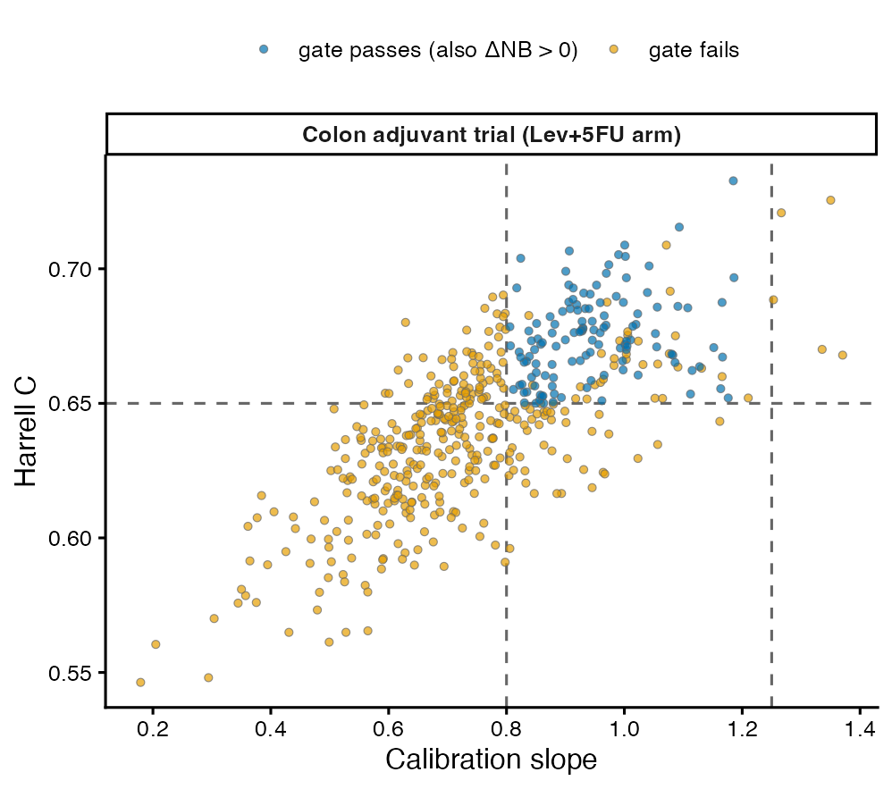
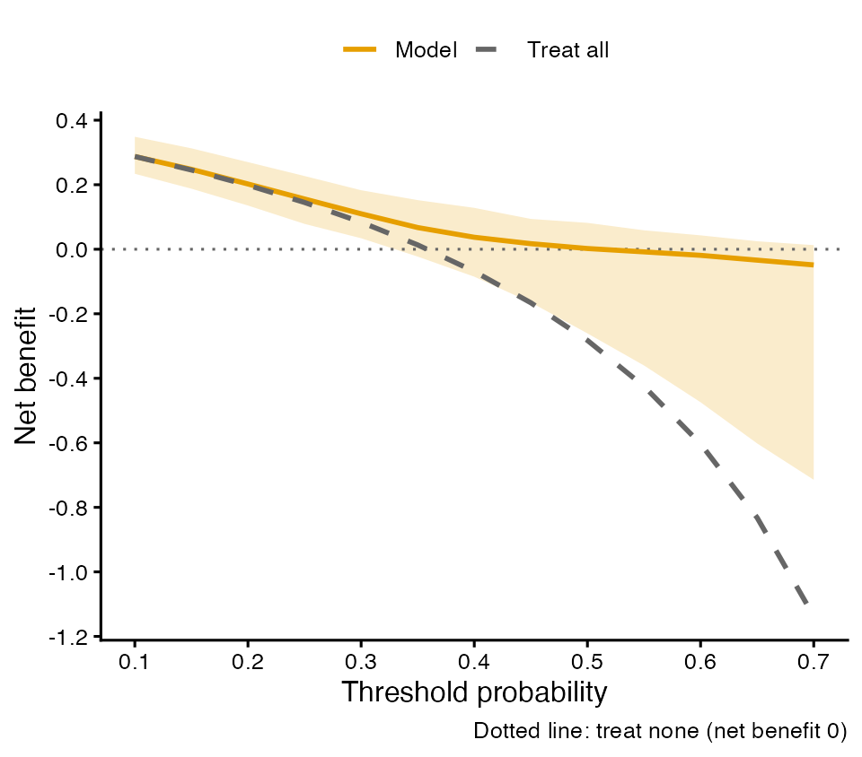
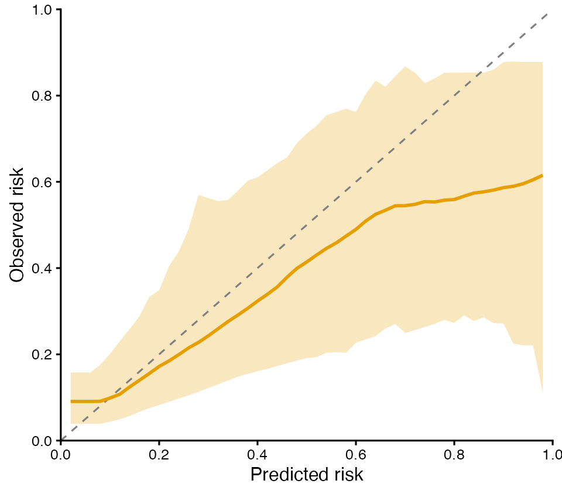

External validation on the colon adjuvant trial (treatment-arm split)
Source:vignettes/worked_example_colon.Rmd
worked_example_colon.RmdThis article externally validates a Cox model on the colon
adjuvant-therapy trial (survival::colon, death endpoint).
We develop the model on the observation and levamisole arms and validate
it on the levamisole-plus-5-FU arm. That arm receives the effective
therapy, so its baseline risk is lower: a case-mix and transport shift
that calibration-in-the-large and the calibration slope pick up while
discrimination alone misses it.
The example also shows why separate marginal intervals cannot answer the deployment question. Harrell C and the calibration slope move together across the posterior, so the joint gate probability sits well above the product of the three marginal pass-probabilities.
Prepare data and split by treatment arm
colon has two rows per patient (recurrence and death);
we keep the death endpoint. The retained covariates are analysed
complete-case.
colon_cc <- colon |>
filter(etype == 2) |>
transmute(rx,
time = time / YEAR, # days -> years
status,
age,
sex = factor(sex, levels = c(0, 1), labels = c("female", "male")),
obstruct, adhere, nodes, extent, surg, node4) |>
na.omit()
train <- colon_cc |> filter(rx %in% c("Obs", "Lev")) |> select(-rx)
test <- colon_cc |> filter(rx == "Lev+5FU") |> select(-rx)
cat(sprintf("Train (Obs + Lev): n = %d, %d events\n",
nrow(train), sum(train$status)))## Train (Obs + Lev): n = 616, 323 events
cat(sprintf("Test (Lev+5FU): n = %d, %d events, %.0f%% censored\n",
nrow(test), sum(test$status), 100 * mean(test$status == 0)))## Test (Lev+5FU): n = 295, 118 events, 60% censoredPosterior survival object and the deployment gate
The gate is the same three-part rule as the other examples, with the headline horizon at 5 years: Harrell C >= 0.65, calibration slope in [0.80, 1.25], and positive net benefit at a 20% risk threshold.
ps <- psurv_external(fit, test, time = "time", status = "status",
horizons = c(3, 5), S = 500L, seed = 1)
hH <- 2L; tau <- 5; PT <- 0.20
C_MIN <- 0.65; SLOPE_LO <- 0.80; SLOPE_HI <- 1.25; NB_TOL <- 1e-8
metric_dnb <- function(pt, h) function(draw, w) {
nb <- net_benefit_draw(draw, thresholds = pt, horizon = h, w = w)
c(NB_model = nb$model, dNB = nb$model - max(nb$all, 0))
}
suite <- list(
harrell = metric_harrell_c,
uno = function(d, w) metric_uno_c(d, w, tau = tau),
gonen = metric_gonen_k,
citl = function(d, w) metric_citl(d, w)[paste0("CITL_t", hH)],
slope = metric_cal_slope,
ici = function(d, w) metric_ici(d, w, horizon = hH, method = "auto"),
brier = function(d, w) metric_brier(d, w)[c(paste0("Brier_t", hH), "IBS")],
ipa = function(d, w) metric_ipa(d, w)[paste0("IPA_t", hH)],
r2d = metric_r2d,
nb = metric_dnb(PT, hH))Bayesian read-out: posteriors and frequentist comparators
post_bb <- propagate_many(ps, suite, weights = "bootstrap", seed = 1)
relabel <- function(m) {
m <- sub("^[^.]+\\.", "", m)
m <- sub("_t1\\b", "@3y", m); m <- sub("_t2\\b", "@5y", m); m
}
tab_bb <- posterior_table(post_bb) |> dplyr::mutate(metric = relabel(metric))
lp <- colMeans(ps$eta)
dfv <- tibble::tibble(time = test$time, status = test$status)
freq_wald <- function(est, se) c(estimate = est, lower = est - 1.96 * se,
upper = est + 1.96 * se)
ch <- concordance(Surv(time, status) ~ lp, data = dfv)
cu <- concordance(Surv(time, status) ~ lp, data = dfv, timewt = "n/G2", ymax = tau)
fr_harrell <- freq_wald(1 - ch$concordance, sqrt(ch$var))
fr_uno <- freq_wald(1 - cu$concordance, sqrt(cu$var))
cs <- coxph(Surv(time, status) ~ lp, data = dfv)
fr_slope <- freq_wald(unname(coef(cs)), sqrt(vcov(cs)[1, 1]))
mean_draw <- list(surv2d = matrix(colMeans(ps$surv), nrow = ps$n), eta = lp,
time = test$time, status = test$status,
horizons = ps$horizons, n = ps$n, H = length(ps$horizons))
boot_ci <- function(metric_fn, B = 500L, seed = 7) {
set.seed(seed); n <- ps$n
v <- replicate(B, {
idx <- sample.int(n, n, replace = TRUE)
db <- list(surv2d = mean_draw$surv2d[idx, , drop = FALSE], eta = lp[idx],
time = test$time[idx], status = test$status[idx],
horizons = ps$horizons, n = n, H = length(ps$horizons))
as.numeric(metric_fn(db, rep(1 / n, n))[1])
})
c(estimate = as.numeric(metric_fn(mean_draw, rep(1 / n, n))[1]),
stats::quantile(v, c(0.025, 0.975), names = FALSE))
}
fr_ibs <- boot_ci(function(d, w) metric_brier(d, w)["IBS"])
fr_ici <- boot_ci(function(d, w) metric_ici(d, w, horizon = hH, method = "auto")["ICI"])
names(fr_ibs) <- names(fr_uno); names(fr_ici) <- names(fr_uno)
freq <- tibble::tibble(
metric = c("C_harrell", "C_uno", "cal_slope", "IBS", "ICI"),
estimate = c(fr_harrell[1], fr_uno[1], fr_slope[1], fr_ibs[1], fr_ici[1]),
lower = c(fr_harrell[2], fr_uno[2], fr_slope[2], fr_ibs[2], fr_ici[2]),
upper = c(fr_harrell[3], fr_uno[3], fr_slope[3], fr_ibs[3], fr_ici[3]))
knitr::kable(posterior_vs_frequentist(tab_bb, freq),
caption = "Bayesian posterior median [95% CrI] vs frequentist [95% CI]")| metric | bayesian | frequentist |
|---|---|---|
| C_harrell | 0.647 [0.580, 0.699] | 0.650 [0.599, 0.701] |
| C_uno | 0.653 [0.584, 0.709] | 0.656 [0.603, 0.709] |
| cal_slope | 0.754 [0.400, 1.163] | 0.801 [0.498, 1.104] |
| ICI | 0.120 [0.026, 0.434] | 0.101 [0.068, 0.302] |
| IBS | 0.211 [0.182, 0.350] | 0.204 [0.189, 0.221] |
Discrimination is adequate, and the transport shows up in calibration: mean predicted risk sits above observed and the slope is below one, so the model over-predicts risk on the treated arm.
Deployment-gate probabilities
Jm <- unclass(post_bb); colnames(Jm) <- sub("^[^.]+\\.", "", colnames(Jm))
P_disc <- mean(Jm[, "C_harrell"] >= C_MIN)
P_cal <- mean(Jm[, "cal_slope"] >= SLOPE_LO & Jm[, "cal_slope"] <= SLOPE_HI)
P_bene <- mean(Jm[, "dNB"] > NB_TOL)
P_harm <- mean(Jm[, "dNB"] < -NB_TOL)
P_gate <- mean(Jm[, "C_harrell"] >= C_MIN &
Jm[, "cal_slope"] >= SLOPE_LO & Jm[, "cal_slope"] <= SLOPE_HI &
Jm[, "dNB"] > NB_TOL)
rho_Cslope <- cor(Jm[, "C_harrell"], Jm[, "cal_slope"])
cat(sprintf("P(discrimination adequate) = %.2f\n", P_disc))## P(discrimination adequate) = 0.46## P(calibration acceptable) = 0.40## P(net clinical benefit) = 0.74
cat(sprintf("P(JOINT deployment gate) = %.2f (naive product %.2f)\n",
P_gate, P_disc * P_cal * P_bene))## P(JOINT deployment gate) = 0.25 (naive product 0.13)## corr(C, slope) = 0.74Joint posterior of the two gate-critical axes
Each point is one posterior draw on the Harrell-C and calibration-slope plane. Because C and the slope are positively correlated, the passing draws form a diagonal band inside the gate region instead of scattering independently. That dependence is why the joint probability exceeds the product of the marginals, and why a set of separate intervals cannot recover it.
gate_lab <- c("gate passes (also ΔNB > 0)", "gate fails")
joint_df <- tibble::tibble(
cal_slope = Jm[, "cal_slope"], C_harrell = Jm[, "C_harrell"],
cohort = "Colon adjuvant trial (Lev+5FU arm)",
gate = factor(dplyr::if_else(
Jm[, "C_harrell"] >= C_MIN & Jm[, "cal_slope"] >= SLOPE_LO &
Jm[, "cal_slope"] <= SLOPE_HI & Jm[, "dNB"] > NB_TOL,
gate_lab[1], gate_lab[2]), levels = gate_lab)) |>
dplyr::arrange(gate == gate_lab[1]) # draw the minority passing points last
ggplot2::ggplot(joint_df, ggplot2::aes(cal_slope, C_harrell, fill = gate)) +
ggplot2::geom_vline(xintercept = c(SLOPE_LO, SLOPE_HI), linetype = 2,
colour = "gray40") +
ggplot2::geom_hline(yintercept = C_MIN, linetype = 2, colour = "gray40") +
ggplot2::geom_point(shape = 21, colour = "gray40", stroke = 0.3,
size = 1.4, alpha = 0.7) +
ggplot2::facet_wrap(~ cohort) +
ggplot2::scale_fill_manual(
values = stats::setNames(bc_palette[c("blue", "orange")], gate_lab)) +
ggplot2::scale_x_continuous(breaks = number_ticks(5)) +
ggplot2::scale_y_continuous(breaks = number_ticks(5)) +
ggplot2::labs(x = "Calibration slope", y = "Harrell C", fill = NULL) +
theme_bayesval()
Posterior decision curve and calibration check
pnb <- posterior_net_benefit(ps, thresholds = seq(0.1, 0.7, 0.05),
horizon = hH, weights = "bootstrap",
draws = 300L, seed = 4)
plot_net_benefit(pnb)
ppc <- tryCatch(
ppc_calibration(ps, horizon = hH, method = "auto", draws = 200L, seed = 3),
error = function(e) NULL)
if (!is.null(ppc)) plot_calibration_band(ppc)
Under the illustrative gate these criteria do not support deployment before the baseline risk is recalibrated. The joint read-out recovers one coherent probability from three individually inconclusive measures.